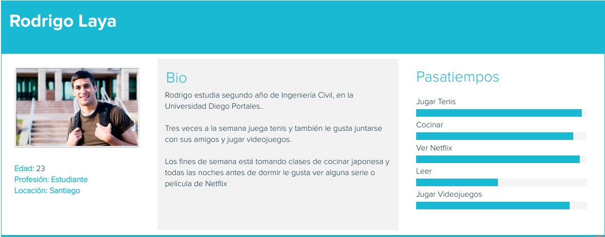
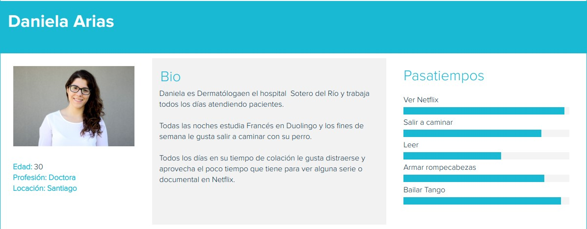

Movie time es una aplicación que te da recomendaciones de películas o series según el tiempo que tú tengas disponibles para ver. Nuestro proyecto se basaba en desarrollar una web app a partir de la información proporcionada por la API IMDB, con la cual, debíamos desarrollar una propuesta innovadora. En nuestro caso, la propuesta fue Movie Time, destinada a dar recomendaciones de películas o series según el tiempo que el usuario podía dedicar a verlas.
2 ux
INVESTIGACIÓN
identificando problemas
Queríamos entender las preferencias, estilos de vida y hábitos de lo usuarios al momento de ver series o películas, para esto realizamos Al comenzar nuestro desafío, nos propusimos investigar a los usuarios para entender sus preferencias (sitios de visualización de películas o series y temáticas frecuentes) y sus hábitos al momento de visualizar el contenido audiovisual. Para realizar esto, planificamos y ejecutamos una encuesta que nos arrojó que la mayor parte de los usuarios:
SÍNTESIS E IDEACIÓN
User persona
En base a nuestra investigación, definimos a dos user persona


Problemática
Se detecta como principal problemática que la mayoría del tiempo los usuarios no saben que ver, tienen poco tiempo ya que trabajan o estudian y necesitan una solución simple y rápida y les gustaría poder:
- Recibir recomendaciones de series y películas que se acomoden al tiempo que disponga.
- Poder filtrar según lo que quiera ver, series o películas.
- Poder filtrar según el género que quiera ver.
- Acceder a la información de forma rápida.
PROPUESTA
Sketch
LLEVANDO LAS IDEAS AL PAPEL teniendo claro lo que el usuario necesita, se comenzó a realizar los primeros sketch de las pantallas


Flujo
Se diseño un prototipo Mobile first donde la primera pantalla pregunta por el tiempo disponible, la segunda pantalla por género de pelicula y la tercera pantalla mostrará una recomendación de película al azar, si no convence al usuario puede elergir otra.
A/B test
se realizaron cambios en el flujo (imagen) para obtener el primer prototipo Basándonos en el primer prototipo se realizaron dos opciones con pequeñas diferencias de flujo para testear, se les mostró ambos a 8 usuarios, de los cuáles 7 prefirieron la segunda opción se les hizo más fácil y entendible.
- más claros los rangos de tiempo
- el botón "otra" les incomodó en el lugar que está
- la segunda pantalla, pensaron que le faltaba algo porque estaba muy vacía se realizaron algunos cambios y se obtuvo el prototipo final.